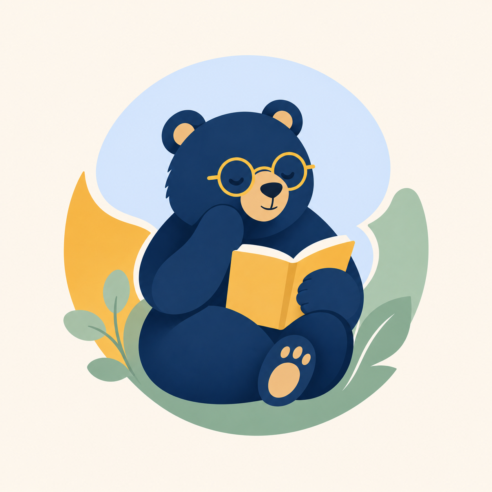

Групповые встречи
Тема, структура и живой разговор с людьми, которым тоже интересно понять себя.

Школа внутренней опоры ЗаписатьсяГрупповые встречи, разборы тем, лекции и психология простым языком — без давления и ощущения, что с вами что-то не так.
Секунду, медведь сверяет календарь.
Мы берем одну тему, обсуждаем ее, смотрим на примеры из жизни и учимся замечать свои реакции.
Тема, структура и живой разговор с людьми, которым тоже интересно понять себя.
Можно спрашивать, узнавать себя в чужих историях и не держать лицо отличника.
Сложные темы из психологии простыми словами и с примерами из жизни.
Упражнения, вопросы и техники, которые можно попробовать в обычной жизни.
Подготовим материал для любого возраста.
Без диагнозов, давления и осуждения.
Прошедшие лекции аккуратно уходят в архив, будущие сортируются по дате автоматически.
Почему мы сближаемся, тревожимся, отдаляемся и выбираем знакомые сценарии.
Как понимать свои чувства и не отдавать им руль без обсуждения.
Где заканчивается «соберись» и начинается нормальная потребность в восстановлении.
Как оставаться в контакте, не сдавая себя в аренду чужим ожиданиям.
Не для обвинения родителей, а чтобы понять, что мы повторяем автоматически.
Как перестать сверять ценность себя по чужому настроению.
Просить, уточнять, спорить и не исчезать из контакта при первом напряжении.
Про внутренний компас, усталость от гонки и право хотеть своего.
Мы встречаемся в группе, разбираем одну тему, обсуждаем примеры, задаем вопросы и учимся смотреть на привычные реакции чуть глубже.
Для тех, кто хочет лучше понимать себя.
Для тех, кто устал от поверхностных советов.
Для тех, кому интересны отношения, эмоции и сценарии поведения.
Для тех, кто хочет учиться говорить о себе и своих чувствах.
Короткие тексты, которые можно прочитать между делами и потом внезапно вспомнить в разговоре.
Я создаю пространство, где психология перестает быть сложной теорией и становится понятным инструментом для жизни. Здесь можно говорить про отношения, эмоции, выгорание, границы, самооценку и смысл — спокойно, честно и человеческим языком.
Мы не лечим жизнь за один вечер и не обещаем чудес. Зато помогаем заметить, что с вами происходит, и найти слова для того, что раньше было только комом внутри.
Можно написать в удобный мессенджер, посмотреть Instagram или просто позвонить.
Больше анонсов, мыслей и материалов — в Instagram и Telegram-канале школы.
+7 (914) 964-73-32